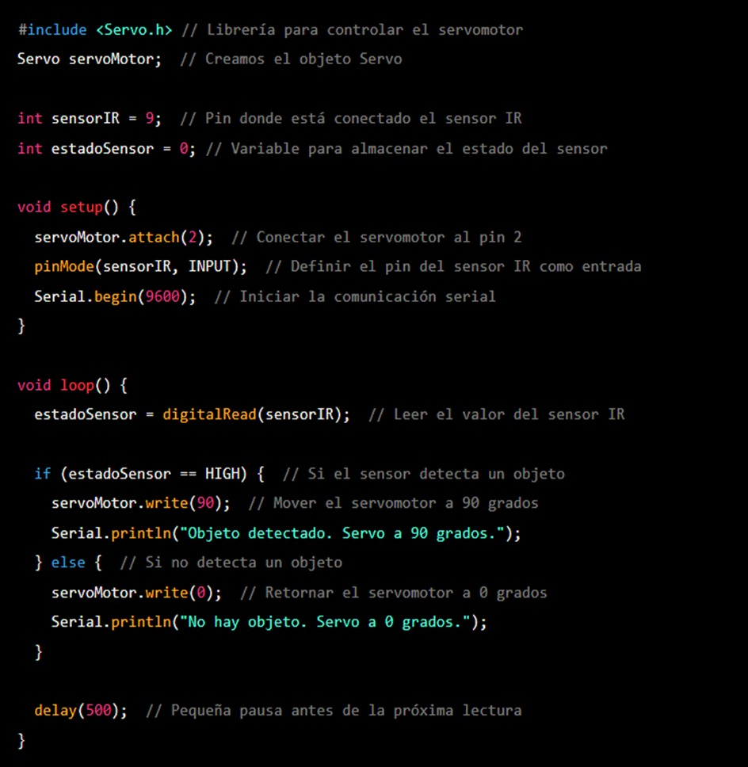

Robot tragamonedas con Arduino
El proyecto "Robot Traga Monedas con Arduino" surge como una iniciativa educativa y práctica dentro del programa de Tecnología de Desarrollo de Sistemas de Información y de Software. Este proyecto tiene como objetivo principal diseñar y construir un robot capaz de detectar y almacenar monedas utilizando la plataforma Arduino.El desarrollo del robot combina conceptos fundamentales de robótica, electrónica y programación, proporcionando una experiencia de aprendizaje integral. A través de este proyecto, los integrantes del equipo tienen la oportunidad de aplicar conocimientos teóricos en un contexto práctico, abordando desafíos reales relacionados con la integración de hardware y software. El uso de Arduino, una plataforma de código abierto ampliamente utilizada, permite la flexibilidad y la accesibilidad necesarias para llevar a cabo este tipo de proyectos, facilitando el aprendizaje y la experimentación.Este documento presenta los avances realizados hasta el momento, incluyendo el diseño del sistema, la implementación inicial de los componentes electrónicos, y los primeros resultados obtenidos. Asimismo, se detallan los pasos siguientes para la culminación exitosa del proyecto.
Preparación de los materiales:
Arduino Uno: Será el cerebro del proyecto.
Protoboard: Para facilitar la conexión de componentes.
Servo motor (TowerPro SG90 o MG90): Se encargará de mover una parte del robot tragamonedas, como la "manivela" o la salida de premios.
Sensor óptico reflectivo SHARP GP2Y0A21YK0F: Detectará la cercanía de un objeto (por ejemplo, una moneda) para activar el sistema.
Cables DUPONT y precintos: Para conectar los componentes entre sí de manera ordenada.
Tubo termocontraíble: Ayudará a proteger las conexiones más delicadas.
Conexión del circuito:
Paso 1: Conexión del sensor óptico al Arduino
El sensor SHARP tiene tres pines: VCC, GND y OUT.
Conecta el pin VCC del sensor a 5V en el Arduino
Conecta el pin GND del sensor a GND en el Arduino.
Conecta el pin de señal OUT del sensor al pin 9 del Arduino.
Paso 2: Conexión del servo motor al Arduino
El servo tiene tres cables: VCC, GND, y el de señal.
Conecta el cable VCC del servomotor al 5V del Arduino.
Conecta el cable GND del servo al GND del Arduino.
Conecta el cable de señal del servo motor al pin 2 del Arduino.
Paso 3: Conexión de la protoboard
Usa la protoboard para facilitar las conexiones de los pines GND
y 5V tanto del sensor como del servo motor.
Inserta los cables con conectores DUPONT para facilitar las conexiones a la protoboard.
Código en Arduino
El código que has escrito ya está preparado para controlar el movimiento del servo motor cuando el sensor detecta un objeto. Asegúrate de haber cargado el código correctamente en tu Arduino:

Detección de monedas
El sensor óptico reflectivo SHARP GP2Y0A21YK0F, conectado al pin 9 del Arduino, debería ser capaz de detectar la presencia de una moneda u objeto similar cuando se acerque lo suficiente. Esto simulará la inserción de una moneda en una máquina tragamonedas real.
Activación del mecanismo
Una vez que el sensor detecte un objeto (HIGH), el servo motor TowerPro SG90 o MG90 debería girar a una posición de 90 grados. Esto podría representar la activación de la "palanca" de la máquina tragamonedas o la apertura de un compartimento para liberar un premio.
Retroalimentación visual
El monitor serial del Arduino (iniciado a 9600 baudios) debería mostrar el mensaje "Objeto detectado. Servo a 90 grados." cuando se active el mecanismo. Esto nos permitirá verificar que el sistema está funcionando correctamente sin necesidad de observar directamente el hardware.
Retorno a la posición inicial
Si el sensor no detecta ningún objeto (LOW), el servo motor debería volver a su posición inicial de 0 grados. En este caso, el monitor seria mostraría el mensaje "No hay objeto. Servo a 0 grados."
Ciclo de operación
El sistema debería repetir este proceso de detección y activación cada 500 milisegundos (0.5 segundos) debido a la función delay(500) al final del loop. Esto proporcionará un tiempo de respuesta razonable sin sobrecargar el procesador.
Robustez
Se espera que el sistema sea capaz de manejar múltiples "inserciones de monedas" consecutivas sin fallos, demostrando la fiabilidad del código y las conexiones hardware.
Conclusiones de la práctica
Las prácticas realizadas en este proyecto permitieron consolidar habilidades esenciales en electrónica y programación mediante la integración de un sensor óptico y un servo motor controlados por un Arduino. Se trabajó en la correcta conexión de componentes y en la programación de un sistema capaz de responder a entradas del entorno de manera automática. A través de pruebas y ajustes, se comprendió el flujo de información entre sensores y actuadores, así como la importancia de un montaje ordenado para asegurar la estabilidad y funcionalidad del circuito. Estas prácticas son fundamentales para el desarrollo de proyectos de automatización y sirven como base para futuras aplicaciones más complejas.